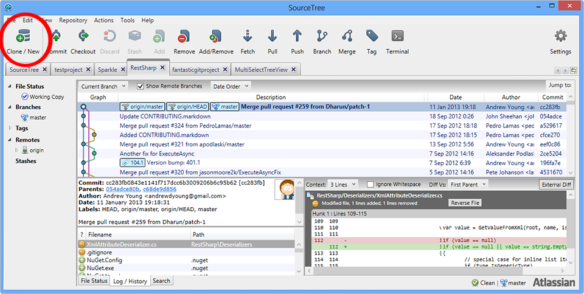
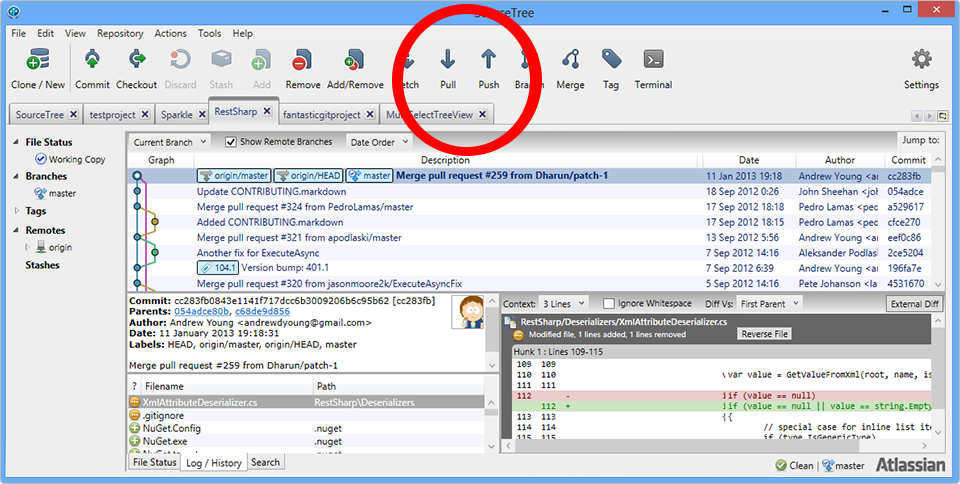

Qué es Git
- Git es un sistema de control de versiones muy flexible.Un VCS guarda los cambios en uno o más archivos a lo largo del tiempo de forma que se pueden consultar esos cambios en cualquier momento.
- "Yo ya tengo mis archivos en directorios divididos por versión".
- Pueden ocurrir errores de todo tipo.
- Colaboración muy difícil o imposible.
Centralizado vs Distribuido
- Los SCV clásicos eran centralizados: un repositorio central hacía el seguimiento, los clientes cogían los archivos de ese servidor.
- Después aparecieron los SCV distribuidos, donde cada cliente tiene una copia
completa, la modifica y redistribuye los cambios.
- "Copia de seguridad".
- No hay un repo central que se pueda morir.
Estructura de Git
- Git hace snapshots y los guarda en una nueva versión.
- Hay tres status en Git: Trabajo, Staging y Repo.
- El Trabajo son nuestros archivos tal y como los vemos en el directorio.
- El Staging son los archivos que entrarán en el próximo commit.
- El Repo es la base de datos a la que se hace el commit y desde la que se copian los archivos de Trabajo.
Por ejemplo si queremos trabajar en la versión 1.4, pedimos al Repo que ponga los archivos correspondientes a esa versión en nuestro directorio de Trabajo.
Si hemos hecho cambios en un archivo y lo queremos añadir al Repo primero lo metemos en el Staging.
Git GUI

- Existen varias herramientas para usar Git. Usaremos SourceTree, una heramienta de Atlassian (Bitbucket). https://www.sourcetreeapp.com/
Comienzo
Se puede empezar un Repo local con init o clone de un Repo ya existente.
Una vez clonado/iniciado tendremos una copia de todo el Repo en nuestro directorio de Trabajo. Podremos modificar/añadir archivos.
Modificar, Stage, Commit

El flujo normal de trabajo es un ciclo:
- Modificar o crear un (o varios) archivo.
- Añadirlo al Stage.
- Añadirlo al Repo (commit).
Push, Pull
Si trabajamos con más gente en los mismos archivos
- Hacemos una actualización del Repo remoto antes de trabajar (pull).
- Seguimos el flujo habitual Modificar -> Stage -> Commit.
- Actualizamos el Repo remoto con nuestros archivos (push).
Buenas prácticas
- Los commits deben ser lo más atómicos (indivisibles) posible. Evitar commits monstruosos.
- Si trabajamos en compartido, no modificar el árbol después de un push.
- Añadir una descripción a cada commit. No hay nada de malo en que la descripción del commit sea más extensa que la modificación.
Branching
- Creando un branch podemos trabajar en una sub-versión de testeo sin afectar a los demás.

Undo
No existe comando "undo" en Git. Podemos hacer:
- Reset para deshacer cambios que no han sido compartidos.
- Checkout normalmente se usa para cambiar entre branches. Pero lo que hace realmente es cambiar entre snapshots. De esta forma podemos hacer un cambio a otro estado/snapshot.
- Revert hace un "undo" añadiendo los cambios que sean necesarios para hacer que el commit actual sea igual que uno anterior. No se pierde la historia.
Links
Introducción rápida
https://www.atlassian.com/git/tutorials/
Manual detallado
https://git-scm.com/documentation
Referencia completa
how to [verbo] Git